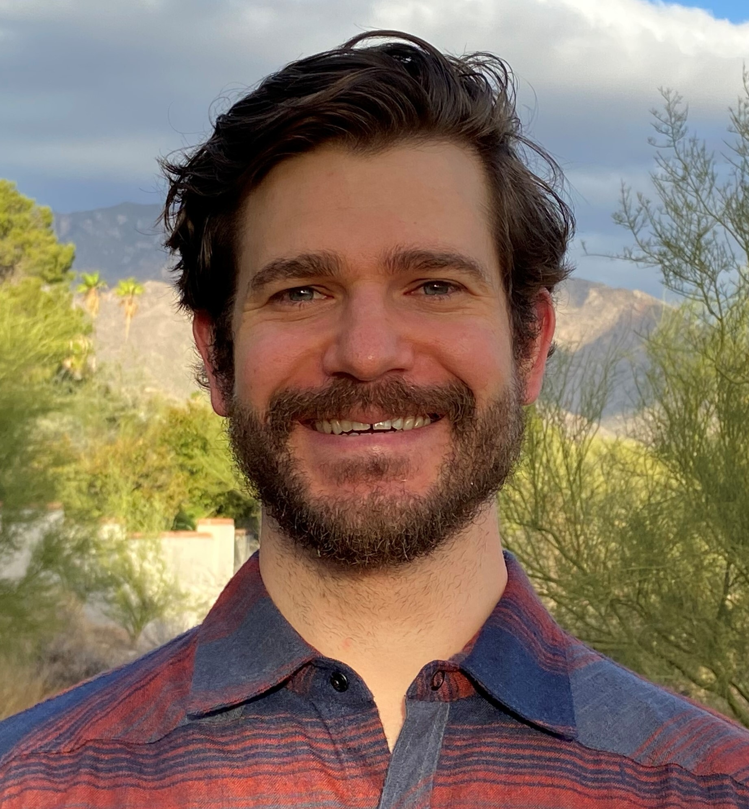
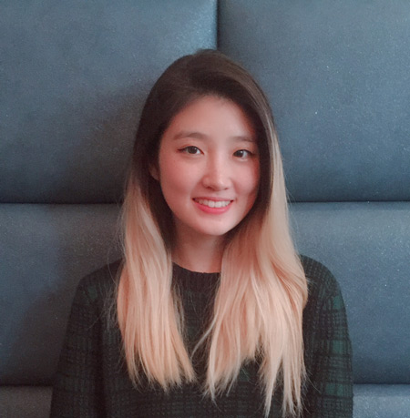
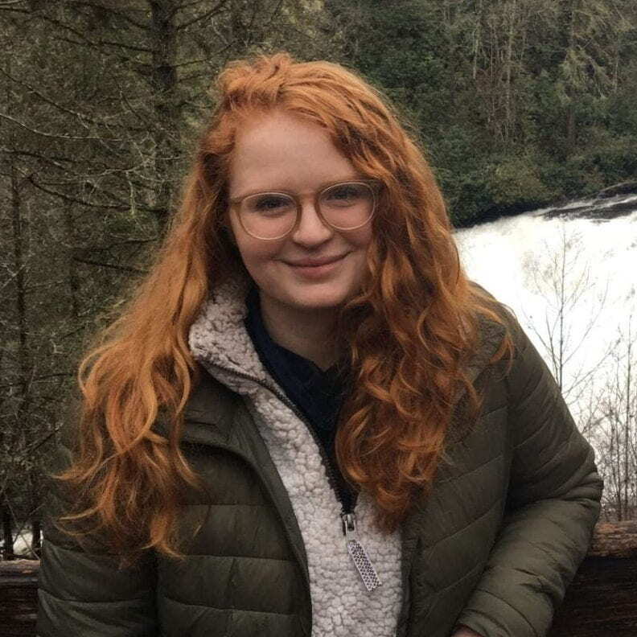
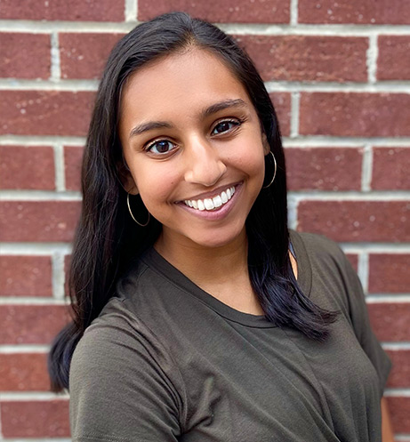
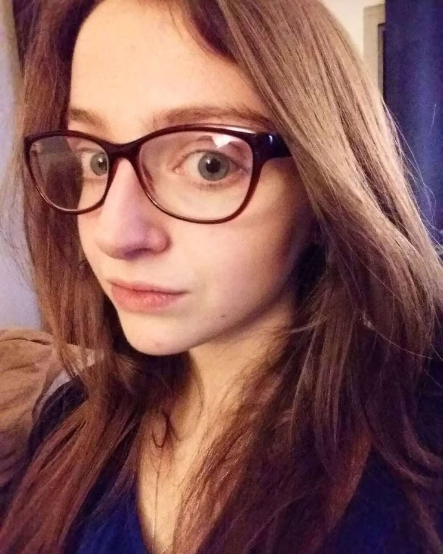
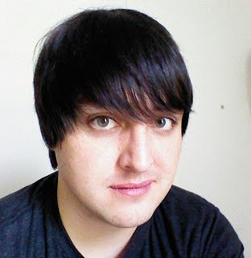

Lab Director
 Dylan D. Wagner, Ph.D.
Dylan D. Wagner, Ph.D.
Associate Professor of Psychology
Email |
Faculty Page |
Google Scholar |
CV
Dylan Wagner is an Associate Professor of Psychology The Ohio State University.
He is also a member of the Center for Cognitive and Behavioral Brain Imaging
and the Center for Cognitive and Behavioral Science and a core faculty of the
newly formed cognitive neuroscience program.
His research covers several topics related to person perception, social cognition, self-regulation
and social cognitive neuroscience.
Graduate Students

Timothy W. Broom | Email
Timothy Broom received a B.S. in Psychology and B.A. in Creative Writing from the University of
Arizona in 2011, and an M.A. in Psychological Sciences from Northern Arizona University in 2016.
Tim’s research investigates how social information is represented in the brain as well as the
neural correlates of narrative experiences. He is interested in how neural representations of
others might change depending on factors like motivation and context, as well as how the
structure of these representations might be different across different people. He is also
interested in how individuals adopt the first-person perspective of characters, and how
these and other narrative experiences can impact attitudes and self-beliefs.

Eunbin Stephanie Kim | Email
Eunbin Stephanie Kim graduated from Rutgers University- New Brunswick in 2012 with a
B.A. in Psychology. Prior to joining the Wagner Lab, she worked in Dr. Mauricio Delgado’s
Social and Affective Neuroscience lab. Stephanie is broadly interested in understanding the
neural mechanisms underlying value processing, affect, and social behaviors. More specifically,
she aims to research how evaluations of self-other mental and affective states influence
complex social behaviors.

Allison Londerée | Email |
Personal Website
Allison Londerée graduated from the Ohio State University with a B.S. in Neuroscience
in 2015. Prior to joining the lab, she worked with Dr. Ruchika Prakash in the Clinical
Neuroscience Lab. Broadly, she seeks to examine the intersection between cognitive
control and affective processes and how these processes impact motivation, reward and
self-control in day-to-day life. Ultimately, she plans to elucidate neural markers
that can characterize individual differences in behavioral function.

Rani Bawa | Email
Rani graduated from The Ohio State University with a B.S. in neuroscience, minoring in dance and
clinical psychology, in the spring 2021. Her undergraduate research focused on the concept of
familiarity, integrating research in the fields of perception, emotion, and music. Rani is
broadly interested in connecting behavioral evidence with neural correlates of perception, and how
perception can be influenced by perspective, familiarity level to target objects or people, and
other framing effects. She is interested in looking at interdisciplinary implications of this
regarding (but not limited to!) impression formation, politics, health psychology, and consumer
behavior.
Lab Manager

Elliot Ping
Elliot Ping graduated from the Ohio State University with a B.S. in Neuroscience
in 2020. Prior to joining the Wagner Lab, she worked with Dr. Andrew Leber in the
Cognitive Control Lab and in the Stubbs Lab at the Carl R. Woese Institute for
Genomic Biology at the University of Illinois at Urbana-Champaign. Elliot is
interested in information processing and decision-making across the lifespan,
especially in digital contexts where science- and health-related content meets
political polarization and mis/disinformation.
Undergraduate Students
- Caroline Watts
- Luke Ritter
- Alicia Burgei
- Jyothika Yermal
- Flora Blandl
- Jonathan Culler
- Katie Donovan
- Ashley Glass
- Luke Hamrock
- Qamar Mohamoud
- Mahrukh Naqvi
- Simon Ren
Lab Alumni

Robert Chavez, Ph.D.
Assistant Professor, University of Oregon |
Lab Website
Robert Chavez graduated from Dartmouth College with a PhD in Cognitive Neuroscience in
2015 and was a post-doc in the lab from 2015-2017. He is now an Assistant Professor of
Psychology at the University of Oregon. His research investigates how brain regions
work together to represent information about the self, other people, and the ways
in which people differ from one another.